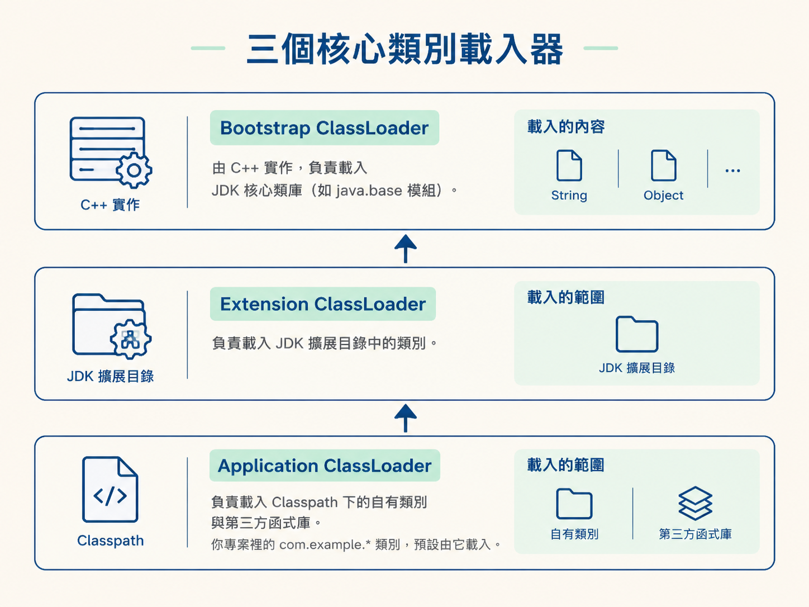
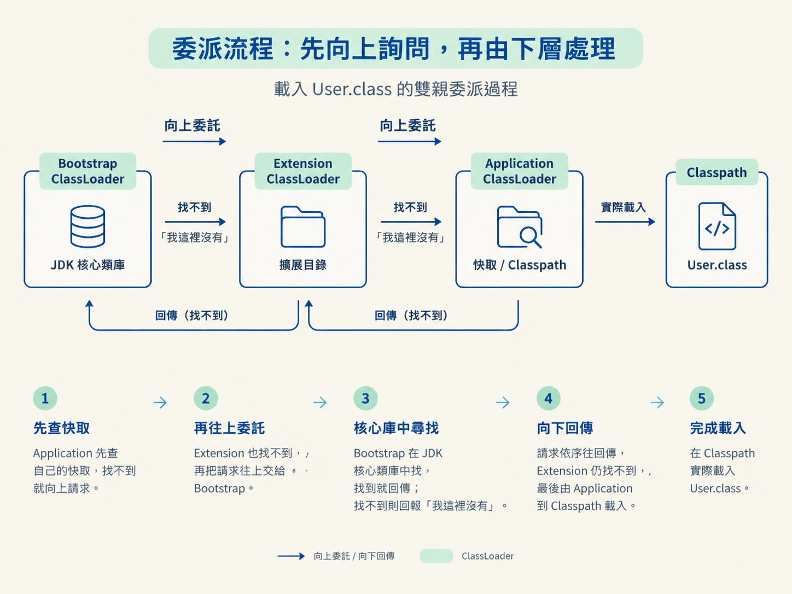
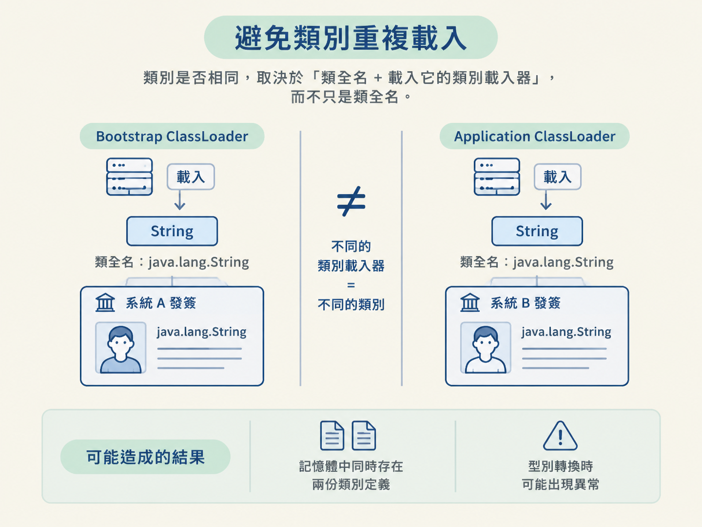

讀完這一節，你應該能說明三個核心類別載入器各自負責什麼、雙親委派的完整流程，以及這套機制如何換來兩個重要結果：沙箱安全與避免類別重複載入。
上一節我們走過了類別載入的流程，但還有一個關鍵問題：到底是誰負責把 .class 檔案讀進 JVM？
假設你在自己專案的 Classpath 下，放了一個自製的 java.lang.String。JVM 會採用你的版本，還是 JDK 內建的版本？
答案是：JDK 內建的 String 會優先被載入，你寫的版本不會生效。這不是碰巧發生，而是雙親委派模型刻意設計出來的結果。它像是核心 API 門口的保全：不管外面有人帶著什麼版本的 String 來，先確認 JDK 自己有沒有，只有上層找不到時，才讓下層處理。
有了這道防線，Java 的核心類別才不會被專案裡的其他類別隨意覆蓋，整個生態系也才能在相對穩定、安全的基礎上運作。
要理解「委派」是怎麼發生的，得先認識負責載入類別的三個主要角色。它們形成一個由下往上的層級：
Bootstrap ClassLoader（啟動類別載入器）位在最頂層，由 C++ 實作，對 Java 程式碼來說通常看不到它。它負責載入 JDK 的核心類別庫，例如早期的 rt.jar，以及新版的 java.base 模組。你每天使用的 String、Object，都是由它載入。
Extension ClassLoader（擴充類別載入器）位在中間，負責載入 JDK 擴充目錄中的類別，例如 jre/lib/ext 裡的類別。
Application ClassLoader（應用類別載入器）位在最下層，負責載入 Classpath 下的自有類別與第三方函式庫。你專案裡那些 com.example.* 的類別，預設就是由它載入。

雙親委派的核心可以濃縮成八個字：向上委託、向下載入。
當某個類別載入器收到載入請求時，它不會馬上自己找檔案，而是先把請求交給父載入器。父載入器也採取同樣做法，繼續往上交，直到最頂層的 Bootstrap ClassLoader。
只有當父載入器在自己的負責範圍內找不到這個類別時，請求才會往回傳，最後由原本收到請求的子載入器嘗試載入。這就像在公司裡找資料：先問主管，再問主管的主管；一路問到最高層都沒有，才回頭由最初接到問題的人自己處理。
假設應用程式要載入 User.class，流程會是這樣：
User.class。
所以，完整流程不是「誰先收到就誰先載入」，而是「一路向上詢問，直到沒有人認領，才由最初的請求者處理」。
這也解釋了為什麼你自訂的 java.lang.String 不會生效。請求一路傳到 Bootstrap ClassLoader 後，它發現核心類別庫裡早就有 java.lang.String，便直接回傳 JDK 的版本。你放在 Classpath 裡的那個版本，從頭到尾都沒有真正取得載入機會。
雙親委派不是為了讓載入流程看起來整齊，而是為了解決兩個很實際的問題：核心 API 不能被任意取代，以及同一個類別不應該被重複當成不同類別載入。
假設有人寫了一個惡意的 java.lang.String，在類別裡植入病毒碼，再把它放進專案的 Classpath。如果沒有雙親委派，Application ClassLoader 可能直接載入這個偽造版本，整個系統就可能被污染。
有了雙親委派，載入請求會先一路傳到 Bootstrap ClassLoader。它發現核心類別庫中已經有真正的 java.lang.String，便優先載入 JDK 的版本。惡意版本因此沒有機會取代核心類別。
這就是雙親委派像「核心 API 保全」的地方：不是禁止下層載入器載入所有類別，而是先確保核心類別由更可信任的上層載入器處理。對高度依賴標準類別庫與第三方函式庫的 Java 生態系來說，這道防線不可或缺。
雙親委派還解決了另一個容易被忽略的問題：JVM 判斷兩個類別是不是「同一個類」，看的不只是類全名，還要加上載入它的類別載入器。
也就是說，判定規則是：
類全名 + 載入該類別的類別載入器
假設同一個 String 先被 Bootstrap ClassLoader 載入一次，之後又被 Application ClassLoader 載入一次。即使兩者的類全名相同，JVM 仍然會把它們視為兩個不同的類別。
這可能造成兩個結果：記憶體中同時存在兩份類別定義，也可能在型別轉換時出現異常。對程式來說，名稱看起來一樣，不代表它們真的能互相替代；載入器不同，就像拿著兩張不同系統簽發的身分證。

雙親委派讓核心類別優先由最頂層的載入器載入，避免同一個核心類別被不同載入器各自載入。這不只是節省記憶體，更是維持 Java 型別系統正常運作的前提。
雙親委派是「向上委託、向下載入」：類別載入請求先交給父載入器，一路傳到最頂層的 Bootstrap；只有父層找不到時，子載入器才會自己載入。三個核心載入器由下而上是 Application（Classpath 中的自有類別）、Extension（擴充目錄）、Bootstrap（JDK 核心類別庫）。這套機制帶來兩個重要結果：沙箱安全，防止核心 API 被覆蓋；避免重複載入，因為判斷類別是否相同時，要看「類全名 + 載入器」，從而確保同名核心類別只載入一份。
雙親委派解決了核心類別的安全與唯一性，但它也有一個天生限制：可見性是單向的，上層載入器看得到自己的類別，卻看不到下層載入器的類別。
那麼，當 JDK 的核心介面需要呼叫第三方實作，或同一個容器必須同時執行多個版本的函式庫時，這套規則還能直接套用嗎？下一節會看到兩種不得不打破雙親委派的場景，也會理解為什麼這些例外不是設計失誤，而是為了讓 Java 的擴充能力真正可用。